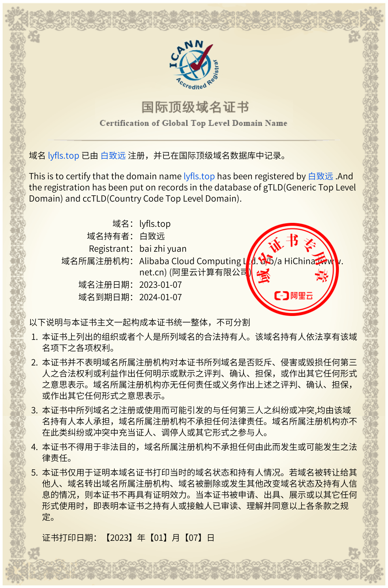

1.关于域名
此域名由白致远注册，并且以在国际顶级数据库中注册
此域名到期时间:2024-1-7
2.关于win ui online
此项目为基于开源项目的二次开发，受到版权保护，原源代码和修改后的源代码已经在github上面公布，可以自行审查
如果引用此项目请遵循开放源代码许可，避免引起不必要的麻烦
此项目不会收集个人隐私等，如不放心可以查看源代码
所有登陆信息均在您的浏览器上保存，本站不会保存任何用户信息
本站所使用的在线工具均为直接跳转到官方界面，如果官方更改域名请联系我
3.关于服务器
此网站上的所有页面均由github经行静态托管，如果遇到访问速度慢等情况请谅解，github日常